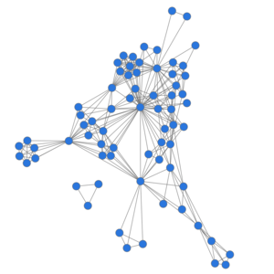
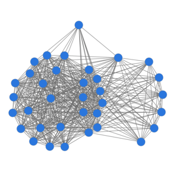

<!doctype html>
<html lang="de">
	<head>
		<meta charset="utf-8">
		<meta name="viewport" content="width=device-width, initial-scale=1.0, maximum-scale=1.0, user-scalable=no">

		<title>DH Lecture: Network Analysis, pt. I (11 March 2017)</title>

		<link rel="stylesheet" href="../reveal/css/reveal.css">
		<link rel="stylesheet" href="../reveal/css/theme/simple.css">

      <!-- adjustments for serif.css -->
      <link rel="stylesheet" href="custom.css">

		<!-- Theme used for syntax highlighting of code -->
		<link rel="stylesheet" href="../reveal/lib/css/zenburn.css">

		<!-- Printing and PDF exports -->
		<script>
			var link = document.createElement( 'link' );
			link.rel = 'stylesheet';
			link.type = 'text/css';
			link.href = window.location.search.match( /print-pdf/gi ) ? '../reveal/css/print/pdf.css' : '../reveal/css/print/paper.css';
			document.getElementsByTagName( 'head' )[0].appendChild( link );
		</script>
	</head>
	<body>
		<div class="reveal">
			<div class="slides">
			    <section data-markdown="" data-separator="^\n---\n" data-separator-vertical="^\n--\n" data-charset="utf-8">
<script type="text/template">

### Современные методы в гуманитарных науках

<br />💻

<br />
Бонч-Осмоловская А. А.<br />
Фишер Ф.<br />
Орехов Б. В.<br />
Скоринкин Д. А.<!-- .element: style="font-size:0.75em;" -->

<br /><br >
(40 лекц, 40 сем)<!-- .element: style="font-size:0.65em;" -->

--

## Seventh Lecture
### Network Analysis, Pt. I (of III)

<br /><br />
Frank Fischer · Danil Skorinkin

(ffischer@hse.ru) · (daskorinkin@edu.hse.ru)<!-- .element: style="font-size:0.75em;" -->

<br /><br />11 March 2017</p>

--

### Recap of Last Session

<br />
- Introduction to Visual Analytics

--

### Path to Second Colloquium

<br />

| Date | Topic |
|:-|:-|
| 4 март | Visual Analytics |
| **11 март** | **Network Analysis 1** |
| 18 март | Network Analysis 2 |
| 25 март | Network Analysis 3 |
| 8 апрель | Colloquium – Presentations |

--

### Agenda for Today

<br />
1. Moretti's Intuitive "Network Theory"
2. History of Network Theory
3. Weighted and Directed Graphs
3. Social Network Analysis
4. Graph- and Node-Related Measures
5. Formalisation of Interactions
5. Seminar: Introduction to Gephi
6. Weekend 🌴

--

# →

---

### Moretti's Intuitive Network Theory

<br />
- Presentation by Artem Kolganov / Maxim Konyaev

--

# →

---

## Network Theory …

<br>
"… is the study of graphs as a representation of (…) relations between discrete objects." (Wikipedia)

--

#### Small example network graph with<br />8 vertices (nodes) and 10 edges:

<br>
<!-- .element width="434px;" -->

<br>
<small>Source: [Wikimedia Commons](https://commons.wikimedia.org/wiki/File:Small_Network.png)</small>

--

### The Emergence of Graph Theory …

<br>
… was Euler's solution of the Königsberg bridge problem.

<!-- .element width="440px;" -->

<small>Historical map of Königsberg, highlighting river Pregel<br>and the seven bridges. (Source: [Wikimedia Commons](https://commons.wikimedia.org/wiki/File:Konigsberg_bridges.png))</small>

--

#### Abstraction from …

<!-- .element height="160px;" -->

<small>… to …</small>

<!-- .element height="160px;" -->

<small>From the seven bridges (source: [Wikimedia Commons](https://commons.wikimedia.org/wiki/File:7_bridges.svg))<br>to an abstract graph (source: [Wikimedia Commons](https://commons.wikimedia.org/wiki/File:Königsberg_graph.svg)).</small>

--

### Features of Euler's Abstraction

<br />
- landmasses: nodes, bridges: edges
- precise location of bridges is irrelevant
- number of bridges and their endpoints are key for the solution of the problem:
  - all four landmasses are reached by an odd number of bridges, when there should be a maximum of two landmasses (nodes) with an odd number of bridges (edges); these two landmasses could then serve as starting and end point, whereas the other two banks would have to feature an even number of bridges leading to them

--

### Skit: Anecdote from Wikipedia

<br />
"В 1905 году был построен Императорский мост, (…). Существует легенда о том, что этот мост был построен по приказу самого кайзера, который не смог решить задачу мостов Кёнигсберга (…) (если добавить восьмой мост, то задача становится разрешимой)."

<br />
<small>Source: ["Задача о семи кёнигсбергских мостах"](https://ru.wikipedia.org/wiki/%D0%97%D0%B0%D0%B4%D0%B0%D1%87%D0%B0_%D0%BE_%D1%81%D0%B5%D0%BC%D0%B8_%D0%BA%D1%91%D0%BD%D0%B8%D0%B3%D1%81%D0%B1%D0%B5%D1%80%D0%B3%D1%81%D0%BA%D0%B8%D1%85_%D0%BC%D0%BE%D1%81%D1%82%D0%B0%D1%85) (Wikipedia article, last updated 23 Nov 2016‎)</small>

--

# →

---

## Weighted and Directed Graphs

<br />
- Euler's graph of the Königsberg bridges was unweighted and undirected

--

### Directed Graph

<br />
<!-- .element height="180px;" -->

<br />
<small>Source: [Wikimedia Commons](https://commons.wikimedia.org/wiki/File:Directed.svg)</small>

--

### Weighted Graph

<br />
<!-- .element height="227px;" -->

<br />
<small>Source: [Wikimedia Commons](https://commons.wikimedia.org/wiki/File:Weighted_network.svg)</small>

--

### A Weighted Graph: Moscow Metro (1/4)

<!-- .element height="500px;" -->

<small>Source: [Wikimedia Commons](https://commons.wikimedia.org/wiki/File:Moscow_metro_map_2010-mhr.png)</small>

--

### A Weighted Graph: Moscow Metro (2/4)

<!-- .element height="500px;" -->

<small>Screenshot: Яндекс.Метро App</small>

--

### A Weighted Graph: Moscow Metro (3/4)

<!-- .element height="500px;" -->

<small>Screenshot: Яндекс.Метро App</small>

--

### A Weighted Graph: Moscow Metro (4/4)

<!-- .element height="500px;" -->

<small>Screenshot: Яндекс.Метро App</small>

--

# →

---

## Social Network Analysis …

<br>"… is the process of investigating social structures through the use of network and graph theories." (Wikipedia)

--

### Social Network Analysis (SNA)

<br />
- SNA started as a bundle of approaches developed in the Social Sciences since the 1930s
- 'Harvard Breakthrough' in the 1960s (centered around sociologist [Harrison White](https://en.wikipedia.org/wiki/Harrison_White)): sociologists, mathematicians and programmers flesh out a distinct structural-analytical perspective on social phenomena
- 1990s: new perspectives on network structures with the advent of the internet, applications in Physics and Bioinformatics; Literary Studies started to focus on SNA around half a decade ago

--

### One of the First Sociograms

<!-- .element width="380px;" -->

<small>"Class structure, 4th grade". Work by Jacob L. Moreno (1889–1974).<br />(First published in NYT, [3 April 1933](http://connectedness.blogspot.de/2005/05/stanley-wasserman-and-visible-path.html). Source for this PNG: [martingrandjean.ch](http://www.martingrandjean.ch/social-network-analysis-visualization-morenos-sociograms-revisited/).)</small>

--

### Basic Bibliography

<br />
- [Stanley Wasserman](https://www.hse.ru/en/org/persons/120496236), Katherine Faust: [*Social Network Analysis: Methods and Applications*](https://books.google.com/books?id=CAm2DpIqRUIC&printsec=frontcover), 1994
  - still the standard reference for the foundations of Social (!) Network Analysis, published long before SNA hype
- Alain Degenne, Michel Forsé: [*Introducing Social Networks*](https://books.google.com/books?id=1mSHqydgrYcC&printsec=frontcover), orig. 1994, transl. 1999
- John Scott: *Social Network Analysis: A Handbook*, 2nd ed. 2000.
- John Scott, Peter J. Carrington (eds.): [*The SAGE Handbook of Social Network Analysis*](https://books.google.com/books?id=mWlsKkIuFNgC&printsec=frontcover), 2011

--

# →

---

## Graph-Related Measures

<br />
- Network Size
- Maximum Degree
- Average Degree
- Density
- Average Path Length
- …

--

### Example

<!-- .element height="400px;" -->

What is the (a) network size, (b) maximum degree, (c) average degree, (d) density, (e) average path length of this network?

--

## Node-Related Measures

--

### Degree

<br>
<!-- .element height="432px;" -->

<br>
<small>In Moretti's formalisation, Hamlet has direct relations to 16 characters (= his degree).<br />(Source: *Дальнее чтение*, p. 294.)</small>

--

### Average Distance

<br />
- in Moretti's formalisation, Hamlet has an average distance (from all other characters) of 1.45
- average distance from Claudius: 1.62
- Horatio: 1.69

--

### Betweenness Centrality

<br />
- "a measure of centrality in a graph based on shortest paths"
- "For every pair of vertices in a graph, there exists a shortest path between the vertices such that either the number of edges that the path passes through (for undirected graphs) or the sum of the weights of the edges (for directed graphs) is minimized. The betweenness centrality for each node is the number of these shortest paths that pass through the node." (Wikipedia)

--

## Closeness Centrality

<br />
- "the sum of the length of the shortest paths between the node and all other nodes in the graph"

--

## PageRank

<br />
- "PageRank works by counting the number and quality of links to a page to determine a rough estimate of how important the website is. The underlying assumption is that more important websites are likely to receive more links from other websites." (quotes in Wikipedia)

--

### Periodic Table of Network Centrality

<br />
- http://schochastics.net/sna/periodic.html

--

### Social Networks Extracted from Movies

<!-- .element width="642px;" -->

<small>[moviegalaxies.com](http://moviegalaxies.com/movies): presents network metrics for every movie and<br />degree + betweenness centrality values for every character in the network.</small>

--

### Node-Degree Distribution

<br>
<!-- .element height="432px;" -->

<br>
<small>Source: Дальнее чтение, p. 298</small>

--

### Power-law regression for Goethe's "Götz"

<!-- .element height="500px;" -->

<small>plenty of "lower" characters – few "average" characters – very few "upper" characters</small>

--

### Reversed (!) power-law regression

<!-- .element height="500px;" -->

<small>plenty of "upper" characters</small>

--

### Different Network Types

<table>
  <tbody>
    <tr>
      <td style="font-size:0.6em;text-align:left;">J. W. v. Goethe, *Götz* (1773) <br><b>Drama of the ›great individual‹</b> </td>
      <td style="font-size:0.6em;text-align:right;">Erich Mühsam, *Judas* (1921) <br><b>Drama of the crowds</b></td>
    </tr>
    <tr>
      <td><div style="text-align:left;"></div></td>
      <td><div style="text-align:right;"></div></td>
    </tr>
    <tr>
      <td style="font-size:0.7em;text-align:left;"><b>Aristocratic model?</b></td>
      <td style="font-size:0.7em;text-align:right;"><b>Communist model?</b></td>
    </tr>
  </tbody>
</table>

<br />
<small>Cf. [our talk at DH2016](https://dlina.github.io/presentations/2016-krakow/).</small>

--

# →

---

### Formalisation of Interactions

<br />
<pre><code class="hljs" data-trim contenteditable>
Source,Target,Weight
Барыня,Варвара,2
Барыня,Кабанов,1
Барыня,Кабанова,1
Барыня,Катерина,2
Борис,Варвара,4
Борис,Глаша,1
Борис,Дикой,1
Борис,Женщина,1
Борис,Кабанов,1
Борис,Кабанова,1
Борис,Катерина,3
Борис,Кудряш,4
Борис,Кулигин,3
Борис,Первый,1
Борис,Феклуша,1
...
</code></pre>

<br />
<small>Ostrovsky's "Groza", interactions encoded in a CSV list (comma-separated values).</small>

--

### Network Graph for Ostrovsky's "Groza"

<!-- .element height="500px;" -->

<small>Source: DS/FF. Visualisation with Python library igraph.</small>

--

### Pushkin, Boris Godunov (1/4)

<!-- .element height="500px;" -->

<small>Source: DS/FF.</small>

--

### Pushkin, Boris Godunov (2/4)

<!-- .element height="500px;" -->

<small>Node size corresponding to degree.<br />(Source: DS/FF. Visualisation with Gephi.)</small>


--

### Pushkin, Boris Godunov (3/4)

<!-- .element height="500px;" -->

<small>Node size corresponding to betweenness centrality.<br />(Source: DS/FF. Visualisation with Python library igraph.)</small>

--

### Character values for "Boris Godunov" (4/4)

<br />

| Character                      | Degree | Betweenness Centrality | Average Distance | Closeness Centrality |
|--------------------------------|--------|------------------------|------------------|----------------------|
| Григорий Отрепьев (Самозванец) | 18     | 537.0                  | 16.61            | 0.06                 |
| Феодор                         | 17     | 276.28                 | 16.47            | 0.06                 |
| Ксения                         | 15     | 187.81                 | 16.51            | 0.06                 |
| **Народ**                      | 11     | 606.93                 | 16.39            | 0.06                 |
| Гаврила Пушкин                 | 11     | **976.12**             | 16.14            | 0.06                 |
| Басманов                       | 11     | 862.69                 | 16.1             | 0.06                 |
| Борис (Царь)                   | 11     | 484.57                 | 16.27            | 0.06                 |
| Шуйский                        | 10     | 282.14                 | 16.35            | 0.06                 |

<br />
<small>Just two observations: **1.** The high betweenness centrality of Г. Пушкин (given the considerably lesser degree compared to other characters) suggests his significance in the network. – **2.** The important role of undissolvable multitudes in a network. ("Народ безмолвствует.")</small>

--

### Comparison of 4 Russian Plays

<br />

| Play                 | Characters | Max Degree | Avg Degree | Density | Avg Path Length |
|----------------------|------------|------------|------------|---------|-----------------|
| Борис Годунов (1825) | 80         | 18         | 5.37       | 0.07    | 3.4             |
| Горе от ума (1825)   | 29         | 19         | 9.45       | 0.34    | 1.94            |
| Ревизор (1836)       | 26         | 23         | 11.0       | 0.44    | 1.62            |
| Гроза (1859)         | 19         | 16         | 8.21       | 0.46    | 1.57            |

<br />
<small>Well, there is not much you can read into these only four plays, other than to factualise that "Борис Годунов" can be rightly called a closet drama. Much more data is needed to calculate and observe general changes over time.</small>

--

# →

---

## Seminar

<br />
Introduction to Gephi

</script>
			    </section>
			</div>
		</div>

		<script src="../reveal/lib/js/head.min.js"></script>
		<script src="../reveal/js/reveal.js"></script>

		<script>
			// More info https://github.com/hakimel/reveal.js#configuration
			Reveal.initialize({
				history: true,

				// More info https://github.com/hakimel/reveal.js#dependencies
				dependencies: [
					{ src: '../reveal/plugin/markdown/marked.js' },
					{ src: '../reveal/plugin/markdown/markdown.js' },
					{ src: '../reveal/plugin/notes/notes.js', async: true },
					{ src: '../reveal/plugin/highlight/highlight.js', async: true, callback: function() { hljs.initHighlightingOnLoad(); } }
				]
			});
		</script>
	</body>
</html>
